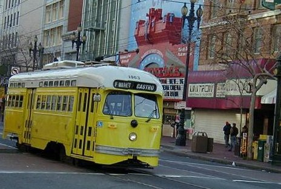
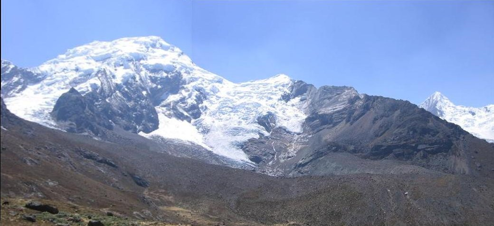
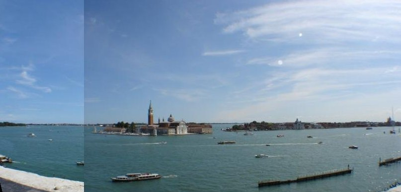
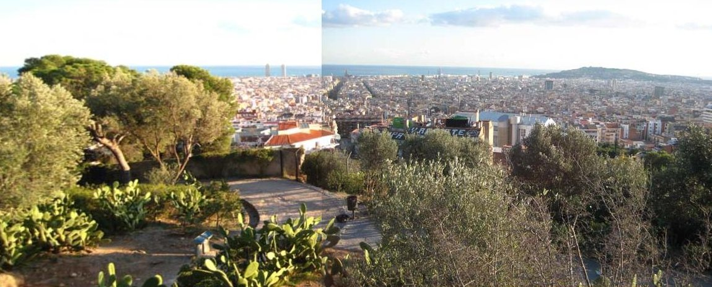
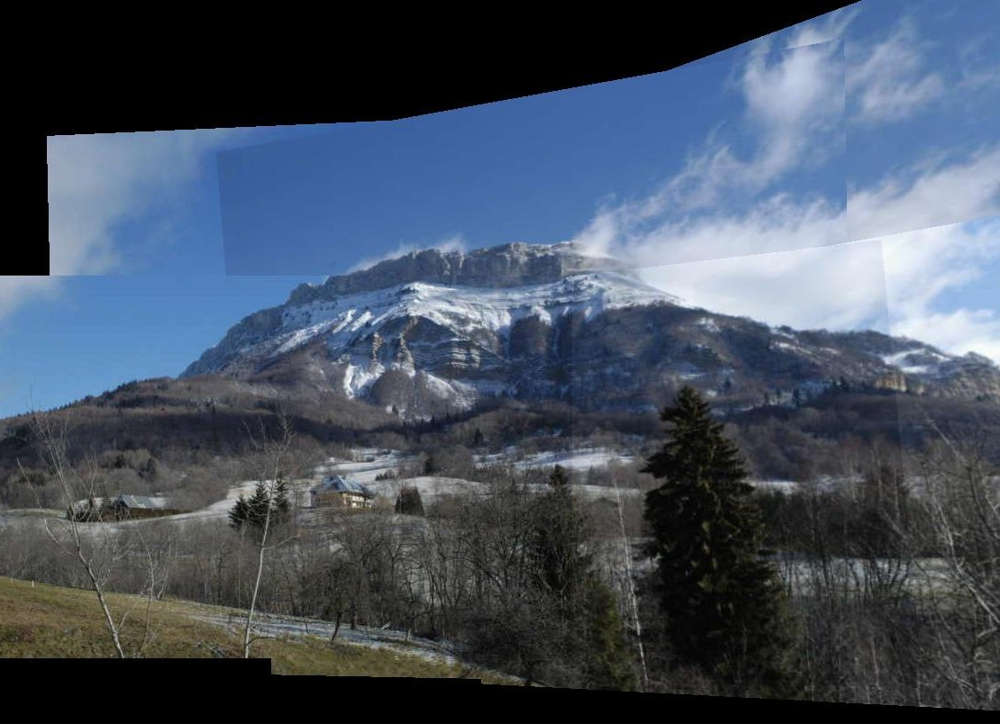
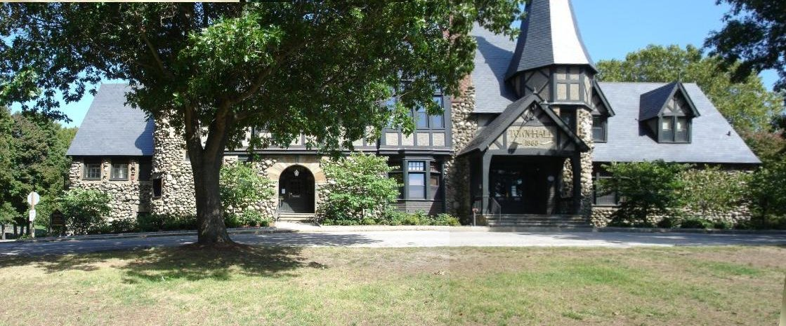
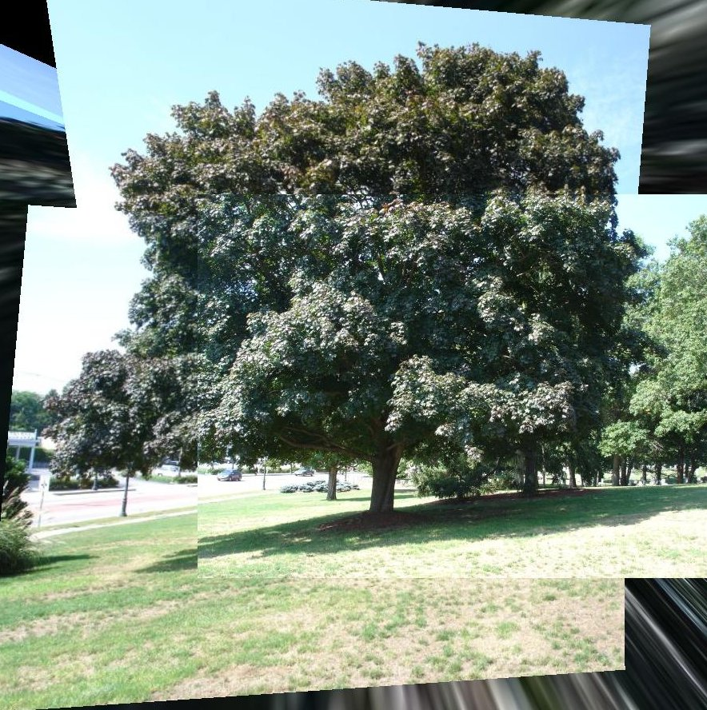
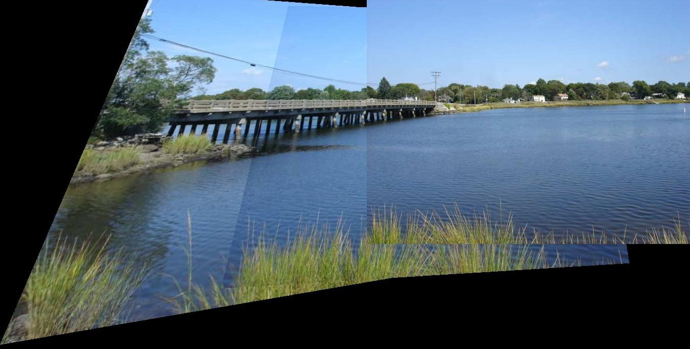
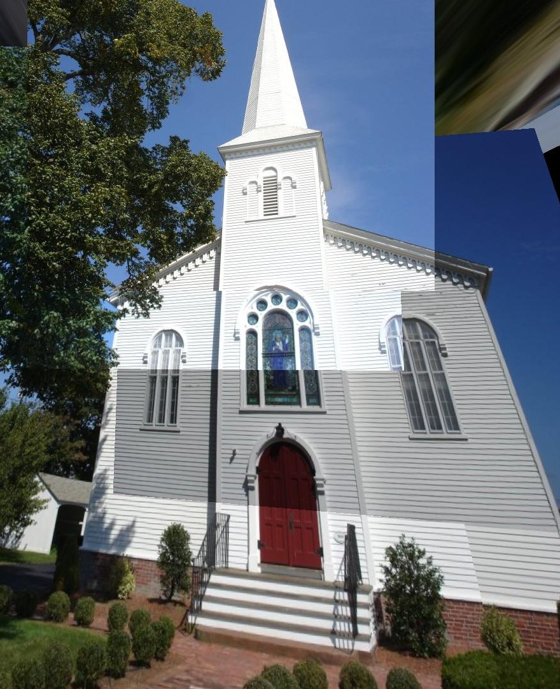

Project 6: Automated Panorama Stitching (Writeup)
Jason Pacheco (pachecoj)
April 17, 2010
View Code View Data
Algorithm Description
The implementation is a variant of that proposed in Brown et al.. We run a Harris detector on each of the images to derive a set of interest points. For each point we perform adaptive non-maximal suppression as outlined in the paper to reduce the number of interest points to roughly 200.
Features and RANSAC
At each interest point we compute discriminative features which consist of a color histogram in an 8x8 grid around the interest point and on all three color channels. These features are obviously not invariant to rotation or scale, but they seem to work well enough.
We compute the pairwise distance between each feature in each of the images. We compute a set of candidate matches by using Lowe's method e1-nn / e2-nn. These candidates are provided to the RANSAC algorithm. We run RANSAC iterations until at least 10 "outlier" features are matched within a distance of 0.5 pixels. The resulting homography is applied to image 1 and projected into the space of image 2.
Graduate Credit: Automatic Panorama Detection
For graduate credit I implemented a version of automatic panorama detection. The algorithm is a simple greedy approach. The algorithmic flow is as follows:
- Compute feature points using the Harris detector for each image
- Compute homographies and scores for each pair of images using RANSAC. The result is a symmetric matrix of scores for each homography.
- Choose an ordering of images using a greedy vertex cover algorithm. We treet this as a fully connected graph with edge weights represented by scores and solve for a vertex cover on this graph which maximizes the sum of edge weights.
- Apply homographies so that all images are in the coordinate system of the final image in the Vertex cover path and construct panorama in this coordinate system.
Results
 |
 |
 |
 |
 I found the images for this panorama here. |
 |
 |
 |
 |
{kind=link}
{kind=link}
{kind=link}
{kind=link}
{kind=link}
{kind=link}
{kind=link}
{kind=link}
{kind=link}